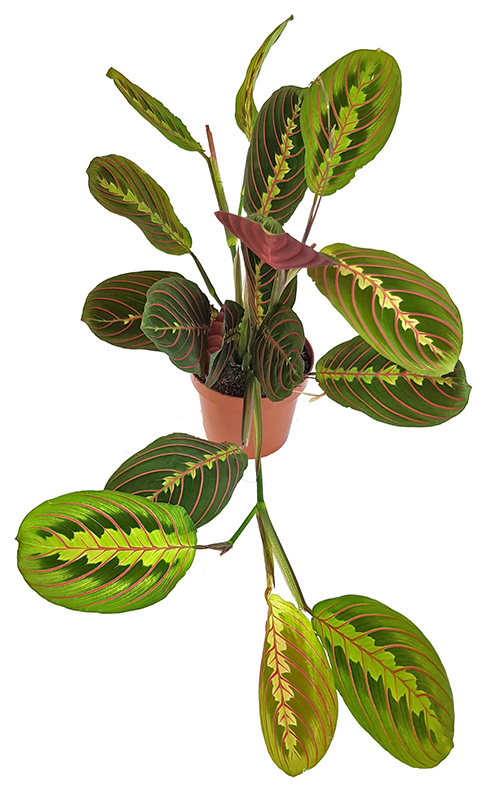

My Jungle Room
Le Dieffenbachia famille des Araceae
Le Dieffenbachia fait partie de la vaste famille des Aracées. Il pousse à l'état naturel dans les forêts tropicales d'Amérique du Sud et des Antilles où il peut dépasser 1,40 m de hauteur. Seule la variété horticole 'Amonea' est capable d'atteindre les 2 m de hauteur en culture. Le genre se divise en une trentaine d'espèces et de nombreux cultivars tous appréciés pour leur large feuillage vert marqué de jaune ou de blanc crème. Les sujets adultes et cultivés dans des conditions optimales peuvent produire des inflorescences blanches ressemblant à celles des arums. Le Dieffenbachia est très présent en jardineries ; grand classique parmi les plantes d'intérieur, il est robuste et facile de culture pour peu que les soins apportés soient adéquats.
Conseils d'entretien
Le Chlorophytum famille des Liliaceae
Le Chlorophytum est un genre de plantes appartenant à la famille des Liliaceae selon la classification classique, ou à celle des Asparagaceae, selon la classification phylogénétique. Il comprend près de deux cents espèces, dont la plus connue est sans doute Chlorophytum comosum, espèce ornementale souvent utilisée comme plante d'intérieur. Il est originaire d'Afrique du Sud. Le chlorophytum est appelé plante vaudoise ou herbe vaudoise, en Suisse, car la couleur de ses feuilles rappelle celle du drapeau vaudois.
Conseils d'entretien
Le Syngonium famille des Araceae
Ces plantes au feuillage persistant font partie de la famille des Aracées. Le genre Syngonium regroupe environ 30 espèces de plantes vivaces poussant spontanément dans les forêts tropicales d'Amérique Centrale et du Sud, d'Australie et d'Afrique, où ces lianes s'élancent à l'assaut des troncs d'arbres grâce à leur racines aériennes.
Conseils d'entretien
Le Schefflera famille des Araliacées
A l'instar du ficus benjamina, le scheffléra (heptaleurum brassaia ou schefflera actiniphyla) est dans son pays d'origine (Australie) un grand arbre pouvant atteindre les 30m. Appartenant à la famille des araliacées, il forme sous nos lattitudes une plante buissonnante pouvant atteindre 1,5 à 2m de hauteur. Les feuilles vertes sont composées et se développent au bout de petits pétioles, reliés à un pétiole plus grand lui-même et fixé à la tige.
Conseils d'entretien
Le Pilea famille des Urticacées
Le Pilea peperomioides est une plante de la famille des Urticacées. Cette très élégante plante succulente originaire de Chine qui décore de plus en plus nos intérieurs depuis quelques années. Ses feuilles rondes, légèrement charnues, perchées sur de longs pétioles (10 cm environ) lui donnent un air de nénuphar aérien très esthétique. La floraison est quand à elle plutôt discrète, du fait de sa couleur verdâtre et de sa petite taille.
Conseils d'entretien

La Maranta leuconeura 'Fascinator' famille des Marantacées
Le genre Maranta, ou Marante, fait partie de la famille des Marantacées qui comporte également les genres Calathea et Ctenanthe pour les plus connus et avec qui on le confond souvent. Les marantas regroupent près d'une cinquantaine d'espèces vivaces tropicales originaires d'Amérique Centrale et du Sud. On les rencontre dans les forêts humides où elles se développent en touffes denses et rhizomateuses. Elles se caractérisent par un feuillage persistant et elliptique, étalé dans la journée et redressé pendant la nuit, et une floraison estivale peu remarquable sous forme de fines grappes de fleurettes blanches tubulaires et bilabiées
Conseils d'entretien